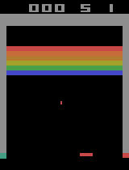

Project Overview
This project is a modular PyTorch implementation of Deep Q-Network (DQN) for Atari environments using the Arcade Learning Environment (ALE). It is based on the original DeepMind work (Mnih et al., 2015), with fixed DQN parameters to isolate and compare different exploration strategies.
